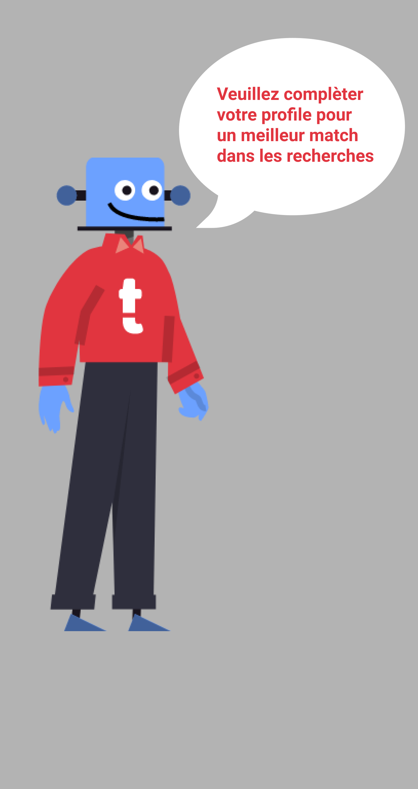

<ion-content>
  
  <ion-button (click)="dismiss()" class="call_to_fill_btn" color="medium">
    <span style="color: black;">Ok compris</span>
    <ion-spinner *ngIf="loading" name="dots"></ion-spinner>
  </ion-button>
</ion-content>
